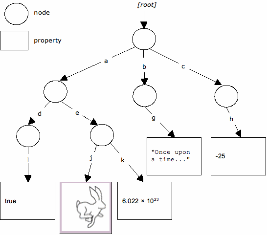

A content repository consists of one or more workspaces, each of which contains a tree of items. An item is either a node or a property. Each node may have zero or more child nodes and zero or more child properties. There is a single root node per workspace, which has no parent. All other nodes have one parent. Properties have one parent (a node) and cannot have children; they are the leaves of the tree. All of the actual content in the repository is stored within the values of the properties.

In the diagram above, we see the single root node of some workspace with child nodes a, b and c, each of which have further child nodes or properties. For example, the node a has two child nodes, d and e. Node e, in turn, has two properties, j and k. The property j contains an image (a picture of a rabbit) and k contains a floating-point number (6.022 × 1023). Similarly, the property i contains a boolean value (true), the property g contains a string (“Once upon a time...”) and the property h contains an integer (-25).
Any item in the hierarchy can be identified by an absolute path. For example, the path / refers to the root node and the path /a/d/i refers to the property with value true. Absolute paths always begin with a / character.
A relative path specifies a node or property relative to another location within the hierarchy. For example, relative to node /a in the above diagram, the path to the property with value true is d/i. The Unix-style path segments “.” and “..” (meaning respectively, “this” and “parent”) are also supported so that, relative to /a, the property containing the value –25 would be ../c/h. Relative paths are distinguished from absolute paths by having no leading / character.